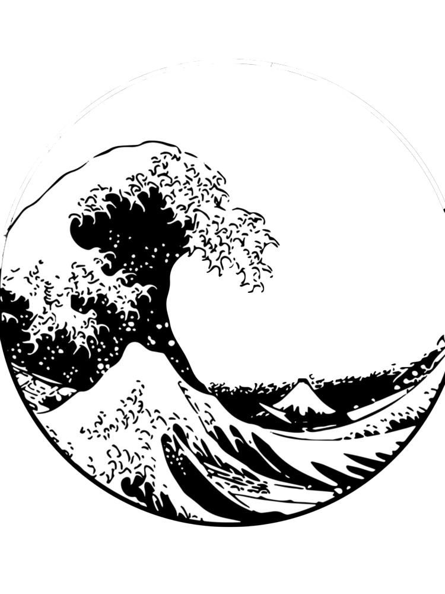
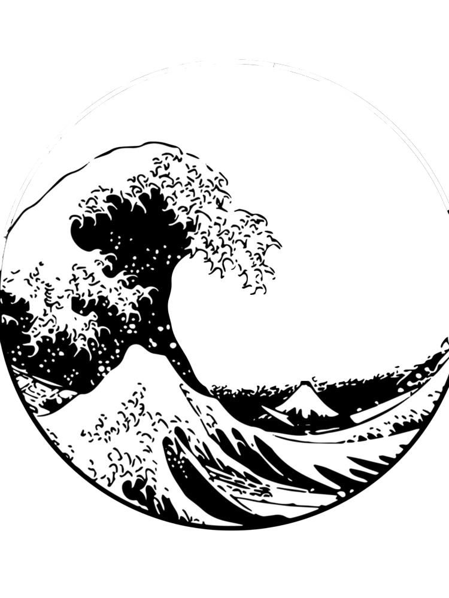

Welcome to my Website
This is a test
A test of skill, knowlage, creativity and my desire to presue web dev
This site is built from hours of research and trial and error
My chosen theme for this site is Japanese underground
About me
If you would like to find out more about me. From achievements, my current IT course, my hobbies and interests ect feel free to check out “About me” in the navigation tab above.
Contact me
To contact me and keep up to date with my progress and work live through twitter. Check out “contact me” in the navigation tab above.
My projects
To browse my projects, previous,in progress and upcoming, check out “my projects” in the navigation tab above.